S
Sukanti Pradhan
Daringbadi, Kandhamal · 26 harvests
Sukanti’s family has grown turmeric on the same two acres for four generations. She still judges a harvest the way her grandmother did — by the scent of a broken rhizome.
Sukanti
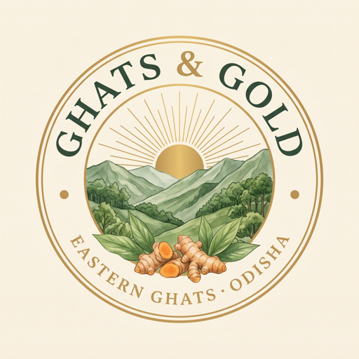
Ghats & Gold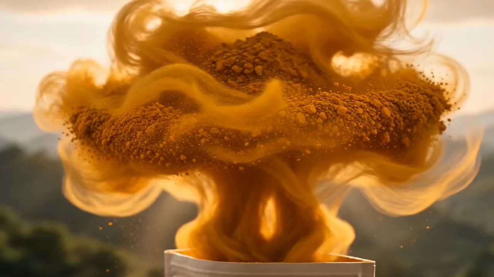
Single-Origin Wellness.·Ethically Sourced.·Crafted in Small Batches.
We don’t sell turmeric. We sell Kandhamal.
We don’t sell coffee. We sell Koraput.
We don’t sell honey. We sell the forests of Odisha.
One Origin · One Story · One StandardEvery Ghats & Gold product is traced to a single micro-region of the Eastern Ghats — never blended, never anonymous. Choose a region.
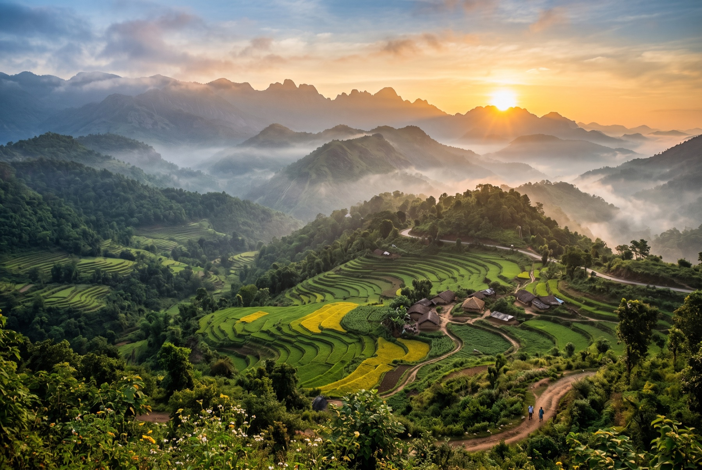
High in the Eastern Ghats of Odisha, the district of Kandhamal sits wrapped in cloud forest — a landscape of terraced valleys, winding rivers and red lateritic soil that has never known industrial farming. Morning mist settles over the hills for half the year; the monsoon does the irrigating; the forest does the fertilising.
It is this specific combination — altitude, humidity, iron-rich soil — that gives Kandhamal turmeric its unusually deep colour and its curcumin content of over 4%, well beyond the commodity average. The Government of India agrees: this turmeric holds a Geographical Indication tag, the same legal protection given to Darjeeling tea. It cannot be grown anywhere else and carry the name.
We didn’t invent this quality. The land did. Our job is simply to bring it to you without diluting it.
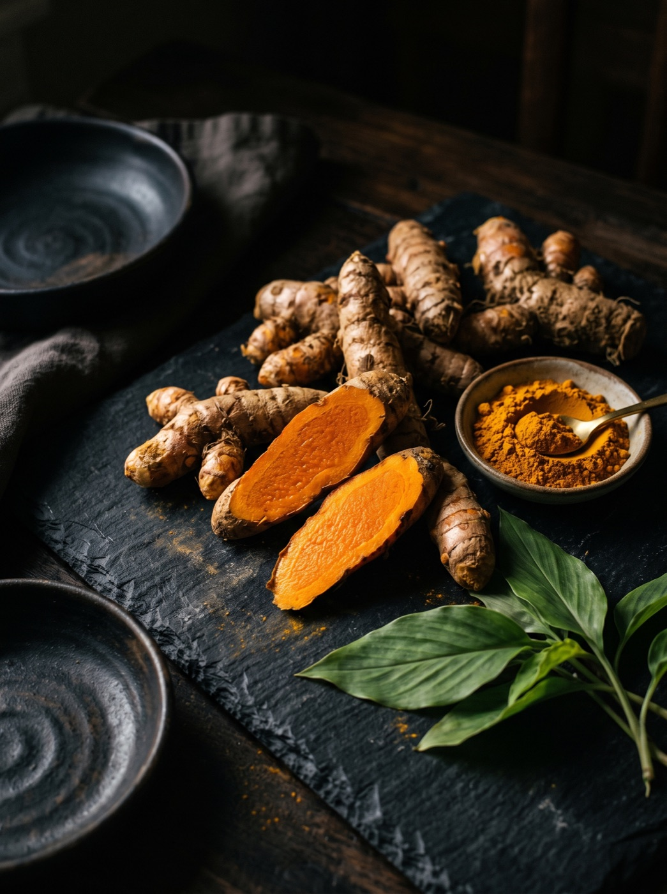
Turmeric in Kandhamal is not grown on estates. It is grown on smallholdings, by tribal farming families who plant, tend and harvest by hand — the way their grandparents did. In a conventional supply chain, these growers are the first link and the last paid: their crop changes hands five or six times before it reaches a shelf, and the premium it earns never travels back up the hill.
Ghats & Gold exists to shorten that chain to a single step. We buy directly, at prices agreed before the season begins, and every batch carries a QR code that traces it to the community that grew it. Farmer first is not a slogan on our pack — it is the reason the pack exists.
Scan any pouch and it will tell you where it came from. Not a country. A hillside.
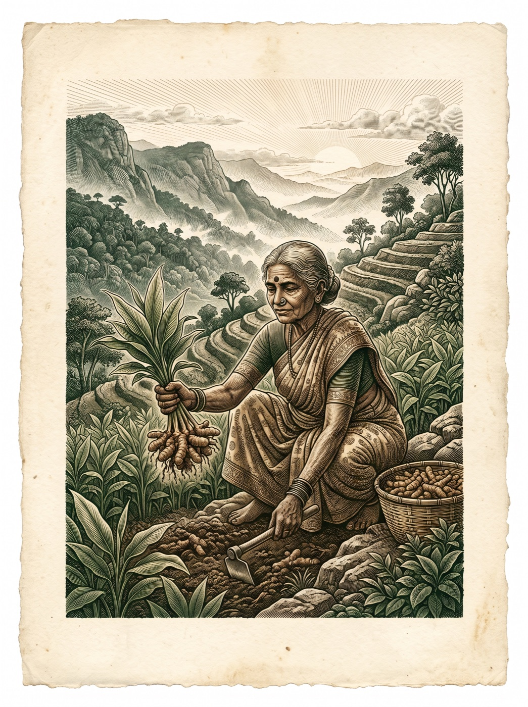
Three of the four hundred families we work with across the Ghats. Their names are on our batches, because the batches are theirs.
Sukanti’s family has grown turmeric on the same two acres for four generations. She still judges a harvest the way her grandmother did — by the scent of a broken rhizome.
Budra planted his first coffee saplings as a teenager, under trees his father refused to cut. His shade-grown arabica will be our second named origin.
Laxmi leads a collective of twelve honey-gathering families at the edge of the Similipal reserve — harvesting only what the hive can spare, exactly as the forest taught them.
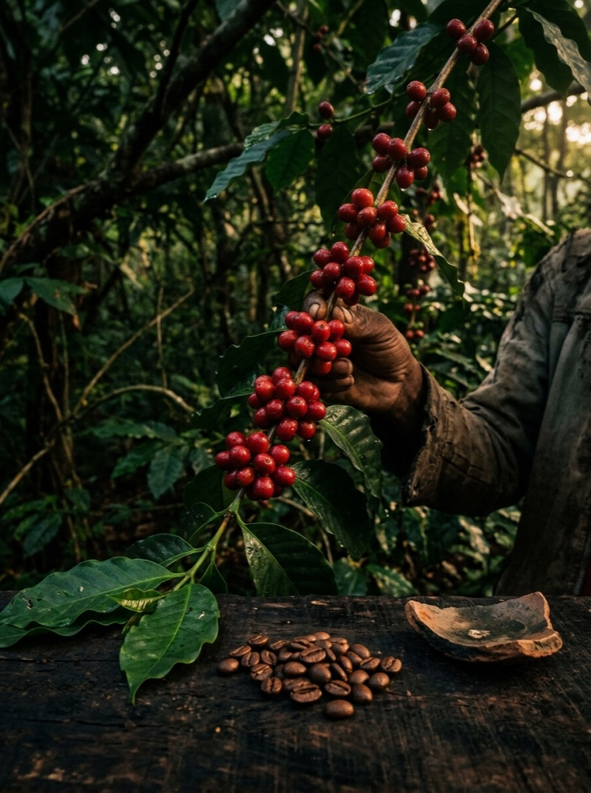
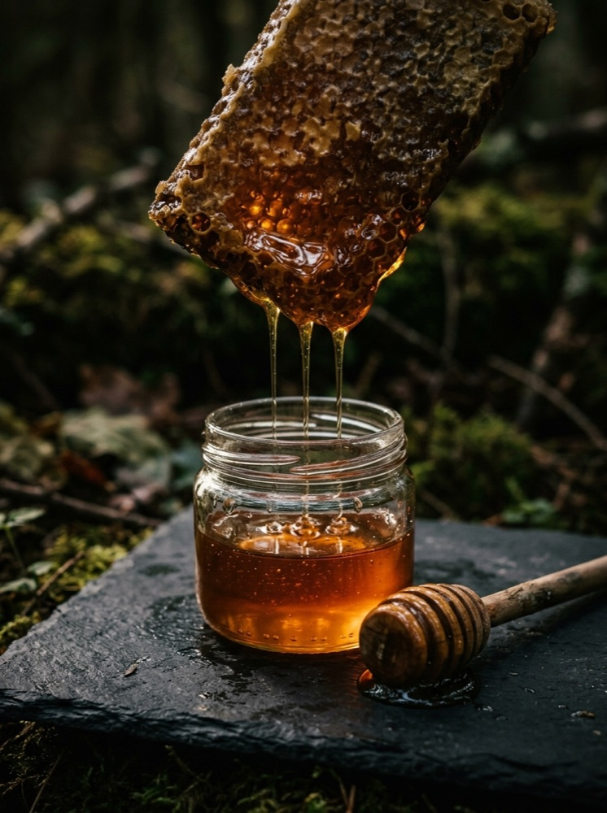
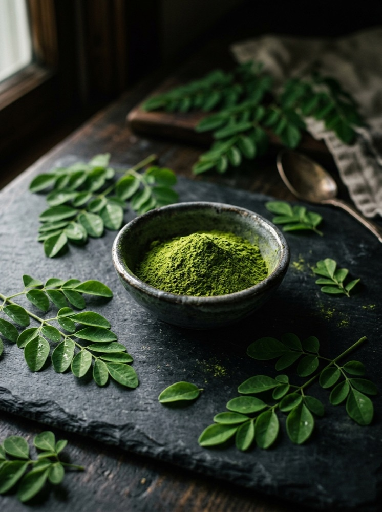
No blending. No chemicals. Speed is the enemy of curcumin — industrial turmeric is boiled and ground hot, trading potency for throughput. Ours takes the long way.
Curcumin is why turmeric matters — the compound behind its colour, its warmth, and centuries of use in Ayurvedic wellness. And it is fragile: heat, light and time all destroy it. Most supermarket turmeric tests at 2–3% curcumin. Ours tests at over 4%, batch after batch, because nothing in our process is allowed to burn it away.
No polishing for artificial shine. No blending across origins. No additives, colourants or preservatives — the ingredient list on our pack is one word long.
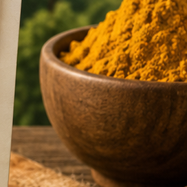
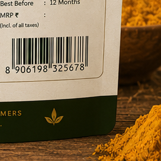
We add a product only when we find a single origin worth naming — and a farming community worth partnering with for the long term.
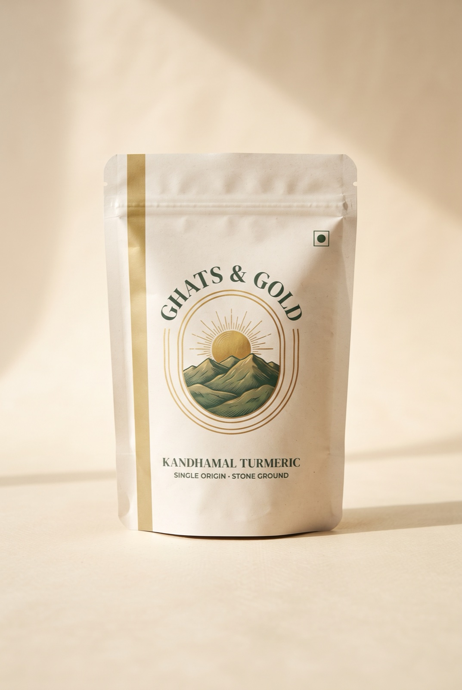
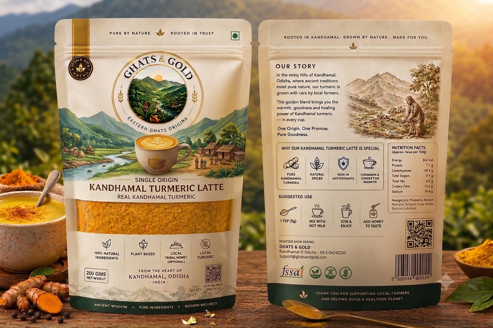
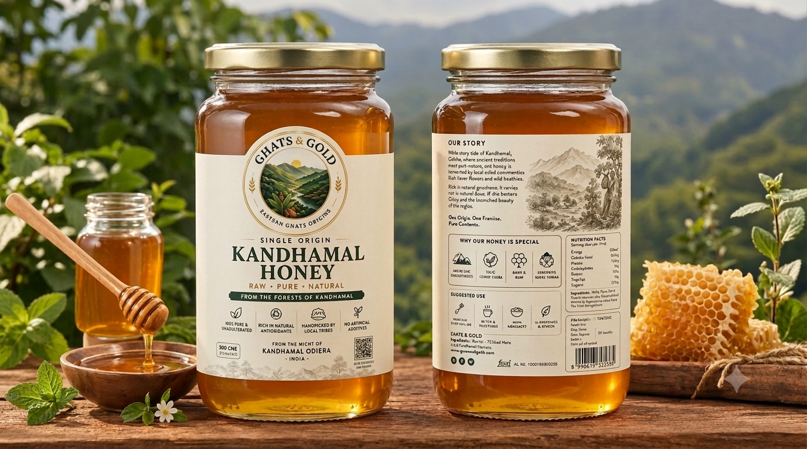
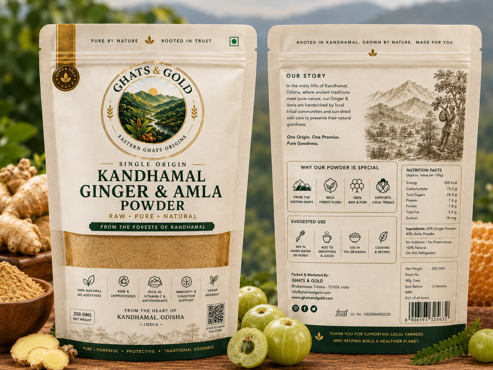
The aroma alone tells you this is nothing like store-bought turmeric.
You can taste the difference single origin makes. Worth every rupee.
Beautifully packaged, and the QR story made it feel personal.